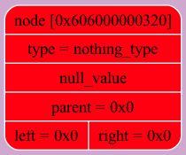
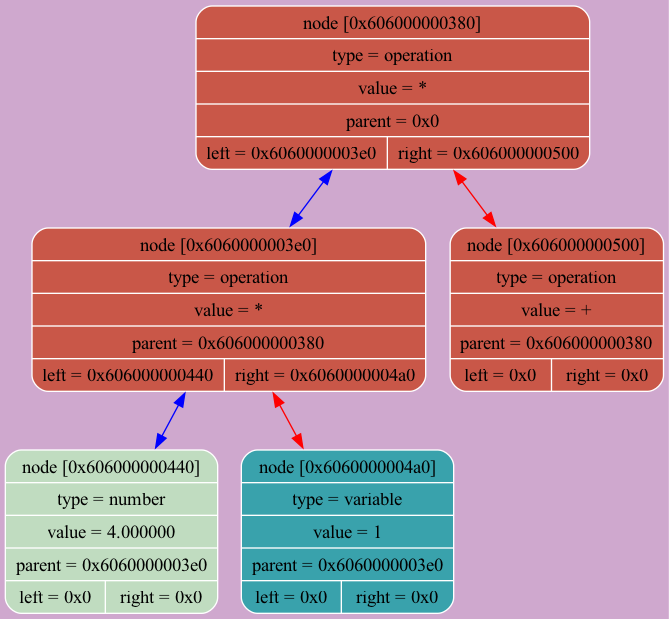

DUMP NUMBER 0 -----------------------------------TreeDump------------------------DUMP 1
tree [0x608000000120]: size = 1 variables: { 0 ('x') = -666.000000 1 ('y') = -666.000000 2 ('z') = -666.000000 3 ('a') = -666.000000 4 ('b') = -666.000000 IMAGE  -----------------------------------END-TreeDump------------------------
DUMP NUMBER 0 -----------------------------------TreeDump------------------------DUMP 2
tree [0x608000000120]: size = 8 variables: { 0 ('x') = -666.000000 1 ('y') = -666.000000 2 ('z') = -666.000000 3 ('a') = -666.000000 4 ('b') = -666.000000 IMAGE  -----------------------------------END-TreeDump------------------------